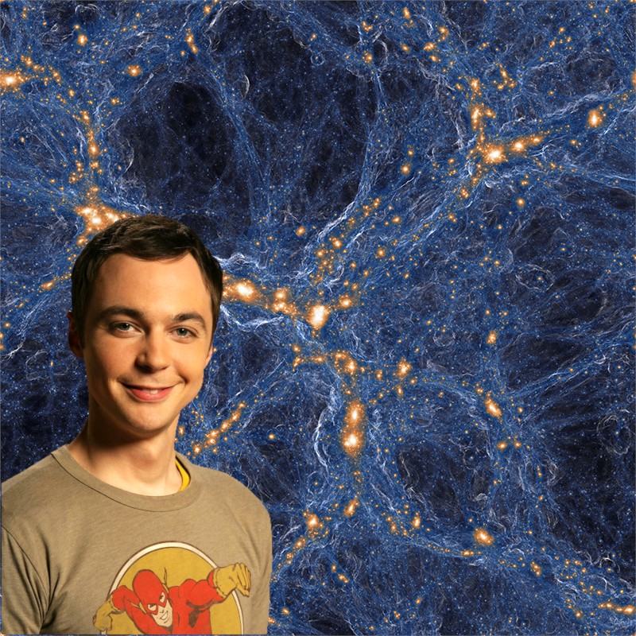

Simulation of galaxies and gas in the universe. Within the gas in the (blue) filaments connecting the (orange) galaxies lurk rare pockets of pristine gas – vestiges of the Big Bang that have somehow been orphaned from the explosive, polluting deaths of stars, seen here as circular shock waves around some orange points. CREDIT: TNG COLLABORATION
[Jim Parsons inserted by me]
This is huge! A group of astronomers, led by Fred Robert and Michael Murphy of the Swinburne University of Technology in Australia, found a cloud of gas left over from the Big Bang, using the telescope located at W. M. Keck Observatory on Maunakea, Hawaii. A dinosaur from the past.